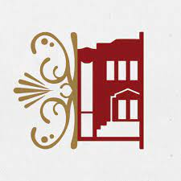
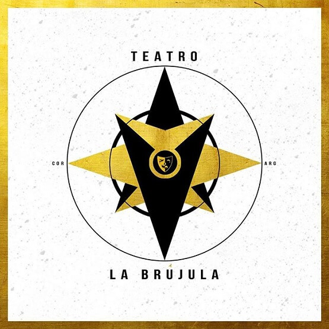
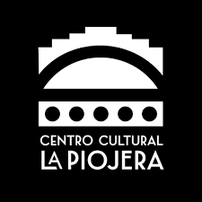
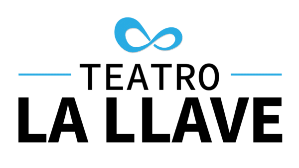
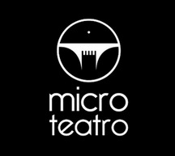

Maria Castaña
CCI Maria Castaña
María Castaña es un centro de producción, promoción y difusión artística y cultural con una trayectoria de trabajo constante.
Asimismo, María Castaña alberga a la Agrupación Teatral de idéntico nombre, reconocida por su trayectoria, continuidad y la calidad de sus propuestas.
Inaugurada antes de la existencia del Instituto Nacional del Teatro, logró en su trayectoria, afianzarse como un Centro Cultural Independiente reconocido a nivel nacional e internacional.
Dirección: Tucuman 260. Córdoba
Teléfono: 3518117130 ☎️ (0351)4235529
La brujula
#VeníAlTeatro
Ciudad de Córdoba
Entradas en nuestra web
CONTAMOS CON EL APOYO DEL INSTITUTO
NACIONAL DEL TEATRO Y DEL FONDO DESARROLLAR.
Dirección: Rivadavia 1452, X5000 X5000IQH, Córdoba
Teléfono: 3513010723
Del libertador

El Teatro del Libertador General San Martín, conocido anteriormente como Teatro Rivera Indarte, es el principal teatro de la ciudad argentina de Córdoba y se destaca como sala de conciertos, ópera y ballet.
Está ubicado en la Avenida Vélez Sarsfield, entre Duarte Quirós y Boulevar San Juan, es actualmente considerado uno de los teatros con mejor acústica del país.
La superficie actual del predio donde está emplazado este teatro es de 3640 m², y de superficie cubierta es de 11.700 m². Cuenta con una capacidad de 1077 ubicaciones.
Dirección: Av. Vélez Sarsfield 365, X5000JJD Córdoba
Teléfono: 0351 414-3412
La piojera
En este cine de barrio Alberdi varias generaciones se criaron viendo tres películas al hilo... la matiné del Cine Moderno fue furor en su época.
Hoy La Piojera ofrece todo tipo de actividades y está abierta a las inquietudes de las diversas comunidades que conviven en Alberdi.
Pasen y vean, de la mano de Rebeca Bortoletto, cómo ha quedado este lugar, ya patrimonio de todos los cordobeses: la resurrección de una sala que se negó a morir y a la que los vecinos sostuvieron.
Dirección: Av. Colón 1559, X5000EQC Córdoba
La llave
Teatro La Llave abrió sus puertas en diciembre de 2018, llevando ya más de 500 funciones de obras de teatro, de texto, musicales, infantiles, stand up, presentaciones de libros y muchas cosas más.
Variedad de espectáculos: ADULTOS: (stand up, unipersonales, comedias, comedias dramáticas, conciertos líricos, recitales acústicos, obras dramáticas, solistas, espectáculos de danzas, tango, folklore, etc). INFANTILES (títeres, marionetas, teatro musical, comedias, cuentos y canciones, show musical).
Dirección: Carlos F. Gauss 5730, Córdoba
Teléfono: 0351 399-4345
Microteatro
Se degusta de a poco, en grageas. El espectador arma el menú, como en esas propuestas gourmet donde el paladar saborea lentamente cada paso. Microteatro propone un formato de acontecimientos inmediatos en escasos minutos y definido por la inmediatez física entre las zonas de representación y expectación, muchas veces sumergidas en una tensión compartida.
Obras teatrales de quince minutos de duración, representadas en un espacio de quince metros cuadrados y para una platea de quince espectadores.
Dirección: Luis Jose de Tejeda 4565, X5000 Córdoba
Teléfono: 0351 757-6108